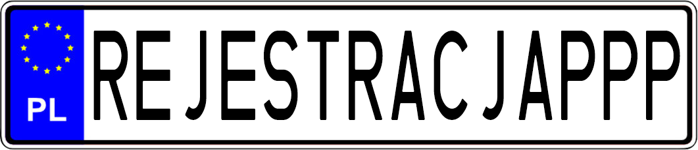

<!DOCTYPE html>
<html>
<head>
    <title>REJESTRACJAPPP</title>
    <link rel="stylesheet" href="style.css">
	<link rel="icon" href="favicon.ico">
	<meta name="viewport" content="width=device-width, initial-scale=1.0">
</head>
<body>
<div id="content">
    <h1 id="heder">
		<button id="back-to-top"></button>
		<input type="text" id="search-bar" placeholder="wyszukaj">
		<a class="docsy" href="PLIKI.html">Zasoby</a>
		<a class="docsy" href="ROZPSZCZ.html">Rozporządzenie Szczegółowe</a>
		<a class="docsy" href="ROZPoREJ.html">Rozporządzenie o Rejestracji</a>
		<a class="docsy" href="pord.html">Prawo o ruchu drogowym</a>
		<a class="docsy" href="index.html">Strona Główna</a>
	</h1>
	<div id="shortcuts">
		<button class="skrt" data-section-id="art72">Rejestracja</button>
		<button class="skrt" data-section-id="art74">Rejestracja Czasowa</button>
		<button class="skrt" data-section-id="wtr_dr">Wtórnik DR</button>
		<button class="skrt" data-section-id="wtr_tr">Wtórnik TR</button>
		<button class="skrt" data-section-id="nowy_dr">Nowy DR</button>
		<button class="skrt" data-section-id="art75">Adnotacje</button>
		<button class="skrt" data-section-id="art78">Obowiązki właściciela</button>
		<button class="skrt" data-section-id="art78a">Czasowe wycofanie z ruchu</button>
		<button class="skrt" data-section-id="art79">Wyrejestrowanie</button>
		<button class="skrt" data-section-id="art81">Badanie techniczne</button>
	</div>
    <div class="artykuly">
		<p class="chapters">——Ustawa Prawo o Ruchu Drogowym——</p>
        <div class="artykul" id="art72">
            <p class="art">Art. 72</p>
				<p class="line1">1. Rejestracji dokonuje się na podstawie:</p>
					<p class="line2">1) dowodu własności pojazdu lub dokumentu potwierdzającego powierzenie
pojazdu, o którym mowa w art. 73 ust. 5</p>
					<p class="line2">3) jednego z dokumentów:</p>
						<p class="line3">a) świadectwa zgodności WE wraz z oświadczeniem zawierającym dane
i informacje o pojeździe niezbędne do rejestracji i ewidencji pojazdu</p>
						<p class="line3">b) świadectwa zgodności wraz z oświadczeniem zawierającym dane
i informacje o pojeździe niezbędne do rejestracji i ewidencji pojazdu</p>
						<p class="line3">c) świadectwa zgodności, o którym mowa w art. 27 ust. 1 pkt 2 ustawy
z dnia 14 kwietnia 2023 r. o systemach homologacji pojazdów oraz ich
wyposażenia, wraz z oświadczeniem zawierającym dane i informacje
o pojeździe niezbędne do rejestracji i ewidencji pojazdu</p>
						<p class="line3">d) dopuszczenia jednostkowego pojazdu wraz z oświadczeniem
zawierającym dane i informacje o pojeździe niezbędne do rejestracji
i ewidencji pojazdu</p>
						<p class="line3">e) świadectwa krajowego indywidualnego dopuszczenia pojazdu, o którym
mowa w art. 2 ust. 1 pkt 33 ustawy z dnia 14 kwietnia 2023 r.
o systemach homologacji pojazdów oraz ich wyposażenia, wraz
z oświadczeniem zawierającym dane i informacje o pojeździe niezbędne
do rejestracji i ewidencji pojazdu</p>
						<p class="line3">f) uznania dopuszczenia jednostkowego pojazdu</p>
						<p class="line3">g) uznania świadectwa krajowego indywidualnego dopuszczenia pojazdu,
o którym mowa w art. 64 ust. 1 ustawy z dnia 14 kwietnia 2023 r.
o systemach homologacji pojazdów oraz ich wyposażenia</p>
						<p class="line3">h) świadectwa dopuszczenia indywidualnego WE pojazdu</p>
						<p class="line3">i) świadectwa unijnego indywidualnego dopuszczenia pojazdu, o którym
mowa w art. 2 ust. 1 pkt 32 ustawy z dnia 14 kwietnia 2023 r.
o systemach homologacji pojazdów oraz ich wyposażenia, wraz
z oświadczeniem zawierającym dane i informacje o pojeździe niezbędne
do rejestracji i ewidencji pojazdu</p>
					<p class="line2">– jeżeli są wymagane; świadectwa zgodności WE, świadectwa zgodności oraz
oświadczenia zawierające dane i informacje o pojeździe niezbędne do
rejestracji i ewidencji pojazdu mogą być podpisane podpisem odbitym
sposobem mechanicznym;</p>
					<p class="line2">4) zaświadczenia o pozytywnym wyniku badania technicznego pojazdu, jeżeli
jest wymagane albo dowodu rejestracyjnego pojazdu lub innego dokumentu
wydanego przez właściwy organ państwa członkowskiego, potwierdzającego
wykonanie oraz termin ważności badania technicznego;</p>
					<p class="line2">5) dowodu rejestracyjnego, jeżeli pojazd był zarejestrowany;</p>
					<p class="line2">6) dowodu odprawy celnej przywozowej, jeżeli pojazd został sprowadzony
z terytorium państwa niebędącego państwem członkowskim Unii
Europejskiej i jest rejestrowany po raz pierwszy;</p>
					<p class="line2">6a) dokumentu potwierdzającego zapłatę akcyzy na terytorium kraju albo
dokumentu potwierdzającego brak obowiązku zapłaty akcyzy na terytorium
kraju albo zaświadczenia stwierdzającego zwolnienie od akcyzy, w rozumieniu przepisów o podatku akcyzowym, jeżeli samochód osobowy,
pojazd rodzaju „samochodowy inny”, podrodzaj „czterokołowiec” (kategoria
homologacyjna L7e) lub podrodzaj „czterokołowiec lekki” (kategoria
homologacyjna L6e), samochód ciężarowy (kategoria homologacyjna N1),
podrodzaj „furgon”, „furgon/podest”, „ciężarowo-osobowy”, „terenowy”,
„wielozadaniowy” lub „van” lub samochód specjalny (kategoria
homologacyjna M1 i N1), został sprowadzony z terytorium państwa
członkowskiego Unii Europejskiej i jest rejestrowany po raz pierwszy.</p>
					<p class="line2">9)(uchylony)</p>
						<p class="line1">1b. W przypadku nabycia od wyspecjalizowanego salonu sprzedaży,
w rozumieniu przepisów o podatku akcyzowym, samochodu osobowego lub
pojazdu, o którym mowa w ust. 1 pkt 6a, dokument potwierdzający zapłatę akcyzy
na terytorium kraju, dokument potwierdzający brak obowiązku zapłaty akcyzy na
terytorium kraju albo zaświadczenie stwierdzające zwolnienie od akcyzy
samochodu osobowego może być zastąpione oświadczeniem wyspecjalizowanego
salonu sprzedaży, że posiada odpowiednio oryginał lub kopię dokumentu
potwierdzającego zapłatę akcyzy na terytorium kraju, oryginał lub kopię
dokumentu potwierdzającego brak obowiązku zapłaty akcyzy na terytorium kraju
od tego samochodu osobowego lub pojazdu albo oryginał lub kopię zaświadczenia
stwierdzającego zwolnienie od akcyzy samochodu osobowego.
</p>
					<p class="line1">2. Wymagania ust. 1 nie dotyczą:</p>
						<p class="line2">1) pojazdu, który był już zarejestrowany na terytorium Rzeczypospolitej Polskiej
– w zakresie ust. 1 pkt 3;</p>
						<p class="line2">1a) pojazdu, który był już zarejestrowany na terytorium Rzeczypospolitej Polskiej
i od ostatniej rejestracji nie nastąpiła zmiana właściciela tego pojazdu,
w przypadku gdy przerejestrowanie pojazdu jest dokonywane na wniosek
właściciela tego pojazdu w związku ze zmianą jego miejsca zamieszkania
(siedziby) – w zakresie dowodu własności pojazdu, o którym mowa
w ust. 1 pkt 1;</p>
						<p class="line2">2) pojazdu zakupionego po przepadku na rzecz Skarbu Państwa lub na rzecz
jednostki samorządu terytorialnego – w zakresie ust. 1 pkt 5;</p>
						<p class="line2">3) pojazdu zakupionego od Policji, Agencji Bezpieczeństwa Wewnętrznego,
Agencji Wywiadu, Służby Kontrwywiadu Wojskowego, Służby Wywiadu
Wojskowego, Centralnego Biura Antykorupcyjnego, Straży Granicznej,
Krajowej Administracji Skarbowej lub Sił Zbrojnych Rzeczypospolitej
Polskiej – w zakresie ust. 1 pkt 5;
</p>
						<p class="line2">5) pojazdu wycofanego czasowo z ruchu – w zakresie ust. 1 pkt 5; w tym
przypadku zamiast dowodu rejestracyjnego wymaga się przedstawienia
decyzji o czasowym wycofaniu pojazdu z ruchu;
</p>
						<p class="line2">7) pojazdu wyrejestrowanego, o którym mowa w art. 79 ust. 4 pkt 3 –
w przypadku powtórnej rejestracji – w zakresie ust. 1 pkt 5;</p>
						<p class="line2">8) pojazdu, o którym mowa w art. 81 ust. 4 pkt 1 – w zakresie ust. 1 pkt 4</p>
				<p class="line1">2a. W przypadku pojazdu sprowadzanego z terytorium państwa niebędącego
państwem członkowskim zamiast dowodu rejestracyjnego, o którym mowa
w ust. 1 pkt 5, dopuszcza się przedstawienie innego dokumentu stwierdzającego
rejestrację pojazdu, wydanego przez organ właściwy do rejestracji pojazdów w tym
państwie</p>
				<p class="line1">2b. W przypadku pojazdu zabytkowego, zamiast dowodu rejestracyjnego,
dopuszcza się przedstawienie oświadczenia właściciela pojazdu, złożonego pod
rygorem odpowiedzialności karnej za fałszywe zeznania, że nie posiada dowodu
rejestracyjnego</p>
				<p class="line1">3. Dodatkowo wymaga się dokumentu potwierdzającego spełnienie
wymagań, o których mowa w art. 2 pkt 39 – w stosunku do pojazdów
zabytkowych.</p>
				<p class="line1">4. W przypadku utraty dowodu rejestracyjnego albo pozwolenia czasowego
pojazdu zarejestrowanego na terytorium Rzeczypospolitej Polskiej organ
rejestrujący dokonuje weryfikacji danych zawartych w utraconym dokumencie
w centralnej ewidencji pojazdów i pobiera z tej ewidencji dane niezbędne do
rejestracji pojazdu.</p>
				<p class="line1">5. W przypadku utraty dowodu rejestracyjnego pojazdu zarejestrowanego za
granicą zamiast tego dokumentu należy przedstawić jego wtórnik albo dokument
wystawiony przez organ rejestrujący właściwy ze względu na miejsce ostatniej
rejestracji pojazdu, potwierdzający dane zawarte w utraconym dokumencie
niezbędne do rejestracji pojazdu. Jeżeli organ rejestrujący właściwy ze względu na
miejsce ostatniej rejestracji pojazdu za granicą odmówił wydania wtórnika dowodu
rejestracyjnego albo dokumentu potwierdzającego dane zawarte w utraconym
dokumencie, starosta może wystąpić do tego organu o potwierdzenie tych danych.
Uzyskane potwierdzenie tych danych, w postaci papierowej albo elektronicznej,
zastępuje dokument potwierdzający dane zawarte w utraconym dokumencie
niezbędne do rejestracji pojazdu.</p>
				<p class="line1">6. W przypadku utraty dowodu rejestracyjnego pojazdu wywiezionego
z kraju, uprzednio zarejestrowanego na terytorium Rzeczypospolitej Polskiej,
organ rejestrujący właściwy ze względu na miejsce ostatniej rejestracji pojazdu na
terytorium Rzeczypospolitej Polskiej, na wniosek właściciela pojazdu, wydaje
zaświadczenie potwierdzające dane zawarte w utraconym dowodzie
rejestracyjnym</p>
						
						
						
						
        </div>

        	
		<div class="artykul" id="art73">
	<p class="art">Art. 73</p>
		<p class="line1"> 1. Rejestracji pojazdu dokonuje, na wniosek właściciela pojazdu, 
starosta właściwy ze względu na miejsce jego stałego zamieszkania (siedzibę) lub 
czasowego zamieszkania, wydając decyzję o rejestracji pojazdu, dowód 
rejestracyjny i zalegalizowane tablice (tablicę) rejestracyjne.</p>
		<p class="line1">1a. Składający wniosek o rejestrację pojazdu może wnioskować 
o zachowanie dotychczasowego numeru rejestracyjnego, w tym tablic (tablicy) 
rejestracyjnych, jeżeli pojazd był już zarejestrowany na terytorium Rzeczypospolitej Polskiej i posiada tablice (tablicę) rejestracyjne zgodne z przepisami 
wydanymi na podstawie art. 76 ust. 1 pkt 1 lit. a oraz utrzymane w należytym 
stanie i czytelne. W takim przypadku starosta, dokonując rejestracji pojazdu, 
wydaje decyzję o rejestracji pojazdu i dowód rejestracyjny oraz dokonuje 
legalizacji dotychczasowych tablic (tablicy) rejestracyjnych. Jeżeli tablice (tablica) 
rejestracyjne nie są zgodne z przepisami wydanymi na podstawie 
art. 76 ust. 1 pkt 1 lit. a albo nie są utrzymane w należytym stanie, albo nie są 
czytelne, stosuje się przepis ust. 1.</p>
		<p class="line1">1b. Właściciel albo podmiot, o którym mowa w ust. 2 i 5, będący 
posiadaczami pojazdu samochodowego zarejestrowanego na terytorium 
Rzeczypospolitej Polskiej, z wyłączeniem motocykla, mogą wnioskować do 
organu rejestrującego właściwego ze względu na miejsce ostatniej rejestracji 
pojazdu o wydanie dodatkowej zalegalizowanej tablicy rejestracyjnej do 
oznaczenia bagażnika zakrywającego tylną tablicę rejestracyjną. Dodatkowa 
tablica rejestracyjna posiada ten sam numer rejestracyjny co numer rejestracyjny 
pojazdu samochodowego. W przypadku gdy pojazd samochodowy nie posiada 
tablic rejestracyjnych zgodnych z przepisami wydanymi na podstawie 
art. 76 ust. 1 pkt 1 lit. a, organ rejestrujący wydaje nową decyzję o rejestracji 
pojazdu wraz z kompletem zalegalizowanych tablic rejestracyjnych z nowym 
numerem rejestracyjnym dla pojazdu samochodowego i nowym dowodem 
rejestracyjnym oraz dodatkową zalegalizowaną tablicę rejestracyjną.</p>
		<p class="line1">1c. Dodatkową zalegalizowaną tablicę rejestracyjną, o której mowa w ust. 1b, 
organ rejestrujący wydaje po:
</p>
			<p class="line2">1) dokonaniu czasowej rejestracji pojazdu z urzędu lub przy wydaniu dowodu 
rejestracyjnego, jeżeli pojazd samochodowy jest rejestrowany przez ten organ, 
albo</p>
			<p class="line2">2) zarejestrowaniu pojazdu samochodowego przez ten organ.
</p>
		
		<p class="line1">1e. Organ rejestrujący wydaje decyzję o odmowie rejestracji pojazdu:
</p>
			<p class="line2">1) w przypadku braku pozytywnej weryfikacji dokumentów, o których mowa 
w art. 72 ust. 1, z uwzględnieniem przy tej weryfikacji art. 72 ust. 1b–3, 4 i 5;</p>
			<p class="line2">2) jeżeli na podstawie przepisów ustawy z dnia 24 sierpnia 2007 r. o udziale 
Rzeczypospolitej Polskiej w Systemie Informacyjnym Schengen oraz 
Wizowym Systemie Informacyjnym (Dz. U. z 2021 r. poz. 1041 oraz 
z 2022 r. poz. 2642) uzyskał informację, że zgłoszony do rejestracji pojazd 
został skradziony, przywłaszczony, utracony lub jest poszukiwany jako 
dowód w postępowaniu karnym lub postępowaniu karnym skarbowym;</p>
			<p class="line2">3) jeżeli w odpowiedzi na jego pytanie skierowane do organu rejestrującego 
właściwego ze względu na miejsce ostatniej rejestracji pojazdu za granicą lub 
punktu kontaktowego wyznaczonego przez państwo członkowskie Unii 
Europejskiej lub Europejskiego Porozumienia o Wolnym Handlu (EFTA) –
strony umowy o Europejskim Obszarze Gospodarczym, uzyskał 
potwierdzenie, że status prawny pojazdu uprzednio zarejestrowanego w tym 
państwie powoduje przeszkodę do rejestracji pojazdu na terytorium 
Rzeczypospolitej Polskiej.
</p>
		<p class="line1">2. Rejestracji pojazdu, którego właścicielem jest przedsiębiorstwo 
wielozakładowe lub inny podmiot, w skład którego wchodzą wydzielone jednostki 
organizacyjne, może dokonać starosta właściwy ze względu na siedzibę zakładu 
lub jednostki, na wniosek kierownika zakładu lub wydzielonej jednostki 
organizacyjnej upoważnionego przez właściciela</p>
		
		<p class="line1">4. Rejestracji pojazdu należącego do przedstawicielstwa dyplomatycznego, 
urzędu konsularnego i misji specjalnej państw obcych lub organizacji 
międzynarodowej, a także ich personelu korzystającego z przywilejów 
i immunitetów dyplomatycznych lub konsularnych na mocy ustaw, umów bądź 
powszechnie uznanych zwyczajów międzynarodowych lub na zasadzie 
wzajemności, dokonuje wojewoda mazowiecki na wniosek ministra właściwego do 
spraw zagranicznych.
</p>
		<p class="line1">5. W razie powierzenia pojazdu przez zagraniczną osobę fizyczną lub prawną 
podmiotowi polskiemu, pojazd ten jest rejestrowany przez określony w ust. 1 organ 
właściwy ze względu na miejsce zamieszkania (siedzibę) podmiotu polskiego.
</p>
		</div>
		<div class="artykul" id="art73aa">
	<p class="art">Art. 73aa</p>
		<p class="line1">1. Właściciel pojazdu jest obowiązany złożyć wniosek o jego 
rejestrację w terminie 30 dni od dnia:</p>
			<p class="line2">1) nabycia pojazdu na terytorium Rzeczypospolitej Polskiej;
</p>
			<p class="line2">2) dopuszczenia do obrotu przez organ Krajowej Administracji Skarbowej 
pojazdu sprowadzonego z terytorium państwa niebędącego państwem 
członkowskim Unii Europejskiej;
</p>
			<p class="line2">3) sprowadzenia pojazdu na terytorium Rzeczypospolitej Polskiej z terytorium 
państwa członkowskiego Unii Europejskiej.
</p>
		<p class="line1">2. W przypadku nabycia pojazdu, o którym mowa w ust. 1 pkt 1, w drodze 
spadku termin, o którym mowa w ust. 1, biegnie od dnia prawomocnego orzeczenia 
sądu o stwierdzeniu nabycia spadku albo sporządzenia aktu poświadczenia 
dziedziczenia.</p>
		<p class="line1">3. W przypadku gdy właścicielem pojazdu, o którym mowa w ust. 1, jest 
przedsiębiorca prowadzący na terytorium Rzeczypospolitej Polskiej działalność 
gospodarczą w zakresie obrotu pojazdami, obowiązany jest do złożenia wniosku 
o rejestrację pojazdu, o którym mowa w ust. 1, w terminie 90 dni.</p>
		<p class="line1">5. Przepisów ust. 1 i 3 nie stosuje się w przypadku, gdy właścicielem nowego 
pojazdu jest przedsiębiorca prowadzący na terytorium Rzeczypospolitej Polskiej 
działalność gospodarczą w zakresie obrotu pojazdami lub produkcji pojazdów.</p>
		<p class="line1">6. Przepisu ust. 1 pkt 1 nie stosuje się w przypadku, gdy przed upływem 
terminów, o których mowa w ust. 1 albo 3, właścicielowi pojazdu nabytego 
i zarejestrowanego na terytorium Rzeczypospolitej Polskiej zostały wydane:
</p>
			<p class="line2">1) zaświadczenie o demontażu pojazdu, o którym mowa w:</p>	
				<p class="line3">a) art. 79 ust. 2,
</p>	
				<p class="line3">b) art. 24 ust. 1 pkt 2 albo art. 33 ust. 3 ustawy z dnia 20 stycznia 2005 r. 
o recyklingu pojazdów wycofanych z eksploatacji (Dz. U. z 2020 r. 
poz. 2056);</p>
<p class="line2">2) zaświadczenie o przyjęciu niekompletnego pojazdu, o którym mowa 
w art. 25 ust. 1 albo art. 33 ust. 3 ustawy z dnia 20 stycznia 2005 r. 
o recyklingu pojazdów wycofanych z eksploatacji</p>
		<p class="line1">7. Przepisu ust. 1 pkt 1 nie stosuje się w przypadku, gdy właściciel pojazdu 
nabytego na terytorium Rzeczypospolitej Polskiej dokona zbycia tego pojazdu 
przed upływem terminów, o których mowa w ust. 1 albo 3.
</p>
		</div>
		
		
		
		<div class="artykul" id="art74">
	<p class="art">Art. 74</p>
		<p class="line1"> 1. Czasowej rejestracji pojazdu dokonuje, w przypadkach 
określonych w ust. 2, organ rejestrujący właściwy ze względu na miejsce stałego 
zamieszkania (siedzibę) lub czasowego zamieszkania właściciela pojazdu, wydając 
decyzję o czasowej rejestracji pojazdu, pozwolenie czasowe i zalegalizowane 
tablice (tablicę) rejestracyjne.
</p>
		<p class="line1">1a. W przypadku, o którym mowa w ust. 2 pkt 2 lit. b, czasowej rejestracji 
może dokonać również organ rejestrujący właściwy ze względu na miejsce zakupu 
pojazdu lub jego odbioru na terytorium Rzeczypospolitej Polskiej.</p>
		<p class="line1">2. Czasowej rejestracji dokonuje się:
</p>
			<p class="line2">1) z urzędu – po złożeniu wniosku o rejestrację pojazdu;
</p>
			<p class="line2">2) na wniosek właściciela pojazdu – w celu umożliwienia:</p>
				<p class="line3">a) wywozu pojazdu za granicę,</p>
				<p class="line3">b) przejazdu pojazdu z miejsca jego zakupu lub odbioru na terytorium 
Rzeczypospolitej Polskiej,</p>
				<p class="line3">c) przejazdu pojazdu związanego z koniecznością dokonania jego badania 
technicznego lub naprawy.
</p>
		<p class="line1">2a. Czasowej rejestracji, o której mowa w ust. 2 pkt 1, można dokonać 
pomimo braku dołączonych do wniosku o rejestrację dokumentów, o których 
mowa w art. 72 ust. 1 pkt 6 i 6a. Dokumenty te powinny zostać złożone przed 
wydaniem dowodu rejestracyjnego.</p>
		<p class="line1">2b. Czasowej rejestracji pojazdu dokonuje się warunkowo, jeżeli właściciel 
pojazdu złoży oświadczenie, że w okresie od tej rejestracji do wydania dowodu 
rejestracyjnego nie nastąpi zmiana w zakresie własności pojazdu.
</p>
		<p class="line1">2d. Organ rejestrujący nie dokonuje czasowej rejestracji, o której mowa 
w ust. 2 pkt 1, w przypadku gdy są spełnione jednocześnie następujące warunki:</p>
			<p class="line2">1) pojazd był ostatnio zarejestrowany na terytorium Rzeczypospolitej Polskiej, 
a właściciel pojazdu albo podmiot, o którym mowa w art. 73 ust. 2 i 5, 
składając wniosek o rejestrację pojazdu, wnioskują o zachowanie 
dotychczasowego numeru rejestracyjnego;</p>
			<p class="line2">2) organ rejestrujący pozytywnie zweryfikował w dniu złożenia wniosku 
o rejestrację pojazdu dane zawarte w dotychczasowym dowodzie 
rejestracyjnym w centralnej ewidencji pojazdów;
</p>
			<p class="line2">3) w dotychczasowym dowodzie rejestracyjnym jest miejsce na dokonanie przez 
organ rejestrujący adnotacji o treści: „W dniu ... złożono wniosek o rejestrację 
pojazdu w ...” oraz wpisanie daty i nazwy urzędu obsługującego organ 
dokonujący adnotacji.</p>
		<p class="line1">2e. W przypadku, o którym mowa w ust. 2d, organ rejestrujący:</p>
			<p class="line2">1) dokonuje legalizacji dotychczasowych tablic (tablicy) rejestracyjnych;
</p>
			<p class="line2">2) wydaje decyzję o rejestracji pojazdu i dowód rejestracyjny.
</p>
		<p class="line1">2f. Właściciel pojazdu albo podmiot, o którym mowa w art. 73 ust. 2 i 5, są 
obowiązani odebrać decyzję o rejestracji pojazdu i dowód rejestracyjny w terminie 
30 dni od dnia złożenia wniosku o rejestrację pojazdu.</p>
		<p class="line1">3. Czasowej rejestracji dokonuje się na okres nieprzekraczający 30 dni. 
Termin ten może być jednorazowo przedłużony o 14 dni w celu wyjaśnienia spraw 
związanych z rejestracją pojazdu.
</p>
		<p class="line1">5. Po upływie terminu czasowej rejestracji tablice rejestracyjne zwraca się do 
organu, który je wydał, z wyjątkiem przypadku, o którym mowa 
w ust. 2 pkt 2 lit. a.
</p>
		<p class="line1">6. W przypadku gdy właściciel pojazdu zamierza skorzystać 
z wyrejestrowania pojazdu z urzędu, o którym mowa w art. 79 ust. 3b, składając 
wniosek o czasową rejestrację pojazdu, o którym mowa w ust. 2 pkt 2 lit. a, składa 
oświadczenie, że pojazd zostanie wywieziony za granicę. Oświadczenie to składa 
się pod rygorem odpowiedzialności karnej za składanie fałszywych oświadczeń. 
Składający oświadczenie jest obowiązany do zawarcia w nim klauzuli następującej 
treści: „Jestem świadomy odpowiedzialności karnej za złożenie fałszywego 
oświadczenia.”. Klauzula ta zastępuje pouczenie organu o odpowiedzialności 
karnej za składanie fałszywych oświadczeń.</p>
		</div>
		
		
		
		<div class="artykul" id="art74a">
	<p class="art">Art. 74a</p>
		<p class="line1"> 1. Organ rejestrujący na wniosek właściciela pojazdu albo 
podmiotu, o którym mowa w art. 73 ust. 2 i 5, wydaje wtórnik dowodu 
rejestracyjnego, nowy dowód rejestracyjny, wtórnik pozwolenia czasowego, 
wtórnik tablic (tablicy) rejestracyjnych lub nowe tablice (tablicę) rejestracyjne, po 
pozytywnej weryfikacji, w dniu złożenia wniosku, w centralnej ewidencji 
pojazdów danych zawartych odpowiednio w dotychczasowym dowodzie 
rejestracyjnym albo w dotychczasowym pozwoleniu czasowym.
</p>
		<p class="line1" id="wtr_dr">2. Właściciel pojazdu albo podmiot, o którym mowa w art. 73 ust. 2 i 5, są 
obowiązani niezwłocznie, jednak nie później niż w terminie 30 dni od dnia 
stwierdzenia utraty dowodu rejestracyjnego albo jego zniszczenia w stopniu 
powodującym jego nieczytelność, złożyć do organu rejestrującego wniosek 
o wydanie wtórnika dowodu rejestracyjnego oraz:
</p>
			<p class="line2">1) złożyć oświadczenie o utracie dowodu rejestracyjnego – w przypadku jego 
utraty;
</p>
			<p class="line2">2) oddać dotychczasowy dowód rejestracyjny – w przypadku jego zniszczenia 
w stopniu powodującym jego nieczytelność.
</p>
		<p class="line1">3. Właściciel pojazdu albo podmiot, o którym mowa w art. 73 ust. 2 i 5, mogą 
złożyć do organu rejestrującego wniosek o wydanie wtórnika pozwolenia 
czasowego w przypadku jego utraty albo zniszczenia w stopniu powodującym jego 
nieczytelność, przy czym składając ten wniosek właściciel pojazdu albo podmiot, 
o którym mowa w art. 73 ust. 2 i 5, są obowiązani:</p>
			<p class="line2">1) złożyć oświadczenie o utracie pozwolenia czasowego – w przypadku jego 
utraty;</p>
			<p class="line2">2) oddać dotychczasowe pozwolenie czasowe – w przypadku jego zniszczenia 
w stopniu powodującym jego nieczytelność.</p>
		<p class="line1" id="nowy_dr">4. Właściciel pojazdu albo podmiot, o którym mowa w art. 73 ust. 2 i 5, są 
obowiązani złożyć do organu rejestrującego wniosek o wydanie nowego dowodu 
rejestracyjnego w przypadku:
</p>
			<p class="line2">1) dokonania w pojeździe zmian konstrukcyjnych lub wymiany elementów 
powodujących zmianę stanu faktycznego w zakresie danych zawartych 
w dotychczasowym w dowodzie rejestracyjnym, albo</p>
			<p class="line2">2) zmiany stanu faktycznego w zakresie danych obecnego właściciela lub 
posiadacza pojazdu zawartych w dotychczasowym dowodzie rejestracyjnym</p>
		<p class="line1">– w terminie 30 dni od dnia, w którym nastąpiła zmiana tego stanu.</p>
		<p class="line1">5. Organ rejestrujący wydaje nowy dowód rejestracyjny również w przypadku 
wniosku właściciela pojazdu albo podmiotu, o którym mowa w art. 73 ust. 2 i 5:
</p>
			<p class="line2">1) o wydanie tablic (tablicy) rejestracyjnych albo ich wtórników z nowym 
numerem rejestracyjnym dla pojazdu;
</p>
			<p class="line2">2) jeżeli w dotychczasowym dowodzie rejestracyjnym brakuje miejsca na 
dokonanie adnotacji, o której mowa w art. 75 ust. 1;</p>
			<p class="line2">3) gdy właściciel pojazdu albo podmiot, o którym mowa w art. 73 ust. 2 i 5, 
wyrazili wolę wymiany dowodu rejestracyjnego, jeżeli diagnosta wypełnił 
wszystkie rubryki w dowodzie rejestracyjnym przeznaczone do wpisania 
terminu następnego badania technicznego pojazdu.
</p>
		<p class="line1">6. W przypadku wniosku, o którym mowa w ust. 4 i 5, organ rejestrujący, 
w dniu złożenia wniosku, dokonuje w dotychczasowym dowodzie rejestracyjnym 
adnotacji, jeżeli jest miejsce na jej dokonanie, o treści: „W dniu ... złożono wniosek 
o nowy dowód rejestracyjny w ...” oraz wpisuje datę i nazwę urzędu obsługującego 
organ dokonujący adnotacji. Dotychczasowy dowód rejestracyjny jest ważny do 
czasu wydania nowego dowodu rejestracyjnego.</p>
		<p class="line1" id="wtr_tr">8. Właściciel pojazdu albo podmiot, o którym mowa w art. 73 ust. 2 i 5, są 
obowiązani niezwłocznie, jednak nie później niż w terminie 30 dni od dnia 
stwierdzenia utraty albo zniszczenia tablic (tablicy) rejestracyjnych, złożyć do 
organu rejestrującego wniosek o wydanie wtórnika tablic (tablicy) rejestracyjnych 
oraz:</p>
			<p class="line2">1) złożyć oświadczenie o utracie tablic (tablicy) rejestracyjnych – w przypadku 
ich utraty;</p>
			<p class="line2">2) oddać zniszczone tablice (tablicę) rejestracyjne – w przypadku ich 
zniszczenia</p>
		<p class="line1">9. W przypadku wniosku, o którym mowa w ust. 2, 4, 5 i 8, organ rejestrujący, 
w dniu złożenia tego wniosku, wydaje, na wniosek właściciela pojazdu albo 
podmiotu, o którym mowa w art. 73 ust. 2 i 5, pozwolenie czasowe oraz 
zalegalizowane tablice (tablicę) rejestracyjne. Pozwolenie czasowe oraz 
zalegalizowane tablice (tablica) rejestracyjne są ważne do czasu wydania 
odpowiednio wtórnika dowodu rejestracyjnego, nowego dowodu rejestracyjnego, 
wtórnika tablic (tablicy) rejestracyjnych lub nowych tablic (tablicy)
rejestracyjnych.
</p>
		<p class="line1">10. Oświadczenia, o których mowa w ust. 2 pkt 1, ust. 3 pkt 1 i ust. 8 pkt 1, 
składa się pod rygorem odpowiedzialności karnej za składanie fałszywych 
oświadczeń. Składający oświadczenie jest obowiązany do zawarcia w nim klauzuli 
następującej treści: „Jestem świadomy odpowiedzialności karnej za złożenie 
fałszywego oświadczenia.”. Klauzula ta zastępuje pouczenie organu 
o odpowiedzialności karnej za składanie fałszywych oświadczeń.
</p>
		<p class="line1">11. W przypadkach, o których mowa w ust. 8, właściciel pojazdu albo 
podmiot, o którym mowa w art. 73 ust. 2 i 5, mogą złożyć do organu rejestrującego 
wniosek o wydanie zalegalizowanych tablic (tablicy) rejestracyjnych z nowym 
numerem rejestracyjnym dla pojazdu. W takim przypadku organ rejestrujący 
wydaje nową decyzję o rejestracji pojazdu, zalegalizowane tablice (tablicę) rejestracyjne z nowym numerem rejestracyjnym dla pojazdu i nowy dowód 
rejestracyjny.
</p>
		<p class="line1">12. Do wniosku o wydanie wtórnika dodatkowej zalegalizowanej tablicy 
rejestracyjnej, o której mowa w art. 73 ust. 1b, stosuje się przepis ust. 8.</p>
		<p class="line1">13. Właściciel pojazdu albo podmiot, o którym mowa w art. 73 ust. 2 i 5, 
mogą zwrócić organowi rejestrującemu dodatkową zalegalizowaną tablicę 
rejestracyjną, o której mowa w art. 73 ust. 1b, albo jej wtórnik po przedstawieniu 
dowodu rejestracyjnego.</p>
		</div>
		
		
		
		<div class="artykul" id="art75">
	<p class="art">Art. 75</p>
		<p class="line1">1. Jeżeli używanie pojazdu uzależnione jest od szczególnych 
warunków określonych przepisami, organ rejestrujący wpisuje w dowodzie 
rejestracyjnym lub pozwoleniu czasowym odpowiednie zastrzeżenie.</p>
		<p class="line1">2. Dowód rejestracyjny, pozwolenie czasowe, zalegalizowane tablice (tablica) 
rejestracyjne oraz ich wtórniki są wydawane za opłatą. Opłatę pobiera organ 
dokonujący rejestracji.</p>
		<p class="line1">3. Zabrania się rejestracji pojazdu złożonego poza wytwórnią, z wyjątkiem 
pojazdu marki „SAM” oraz pojazdu zabytkowego.</p>
		</div>
		
		
		
		<div class="artykul" id="art78">
	<p class="art">Art. 78</p>
		<p class="line1"> 1. W razie przeniesienia na inną osobę własności pojazdu 
zarejestrowanego, dotychczasowy właściciel przekazuje nowemu właścicielowi 
dowód rejestracyjny oraz zaświadczenie o przeprowadzonym badaniu technicznym 
pojazdu, jeżeli w dowodzie rejestracyjnym nie jest określony aktualny termin 
ważności badania technicznego.
</p>
		<p class="line1">1a. W razie przeniesienia na inną osobę własności pojazdu czasowo 
wycofanego z ruchu dotychczasowy właściciel przekazuje nowemu właścicielowi 
decyzję o czasowym wycofaniu pojazdu.
</p>
		<p class="line1">2. Właściciel pojazdu zarejestrowanego na terytorium Rzeczypospolitej 
Polskiej jest obowiązany zawiadomić w terminie nieprzekraczającym 30 dni 
starostę o:</p>
			<p class="line2">1) zbyciu pojazdu;</p>
			<p class="line2">2) zmianie stanu faktycznego wymagającej zmiany danych zamieszczonych 
w dowodzie rejestracyjnym.</p>
		<p class="line1">2a. Zawiadomienia, o którym mowa w ust. 2 pkt 1, właściciel pojazdu 
dokonuje u starosty właściwego ze względu na miejsce zamieszkania (siedzibę) lub 
czasowego zamieszkania, a jeżeli właścicielem jest przedsiębiorstwo 
wielozakładowe lub inny podmiot, w skład którego wchodzą wydzielone jednostki 
organizacyjne – u starosty właściwego ze względu na miejsce rejestracji pojazdu.</p>
		<p class="line1">2b. W przypadku współwłasności pojazdu dla skuteczności zawiadomienia 
o zbyciu pojazdu wystarczającym jest zawiadomienie przez jednego ze 
współwłaścicieli pojazdu.
</p>
		</div>
		
		
		
		<div class="artykul" id="art78a">
	<p class="art">Art. 78a</p>
		<p class="line1"> 1. Czasowego wycofania pojazdu z ruchu dokonuje, na wniosek 
właściciela pojazdu lub podmiotu, o którym mowa w art. 73 ust. 2 i 5, organ 
rejestrujący właściwy ze względu na miejsce ostatniej rejestracji pojazdu, wydając 
decyzję o czasowym wycofaniu pojazdu z ruchu.</p>
		<p class="line1">2. Wycofaniu czasowemu, na wniosek podmiotów, o których mowa w ust. 1, 
podlegają zarejestrowane:</p>
			<p class="line2">1) samochody ciężarowe i przyczepy o dopuszczalnej masie całkowitej od 3,5 t;</p>
			<p class="line2">2) ciągniki samochodowe;
</p>
			<p class="line2">3) pojazdy specjalne;</p>
			<p class="line2">4) autobusy;
</p>
			<p class="line2">5) samochody osobowe w związku z koniecznością wykonania naprawy pojazdu 
wynikającej z uszkodzenia zasadniczych elementów nośnych konstrukcji:</p>
				<p class="line3">a) w przypadkach, o których mowa w art. 81 ust. 11 pkt 1 lit. b oraz pkt 6,</p>
				<p class="line3">b) w przypadku wystąpienia szkody istotnej.</p>
		<p class="line1">3. Decyzję o czasowym wycofaniu pojazdu z ruchu wydaje za opłatą organ, 
o którym mowa w ust. 1, po złożeniu przez właściciela pojazdu lub podmiot, o 
którym mowa w art. 73 ust. 2 i 5, do depozytu w tym organie dowodu 
rejestracyjnego i tablic rejestracyjnych.
</p>
		<p class="line1">4. Pojazd, o którym mowa w ust. 2 pkt 1–4, może być czasowo wycofany 
z ruchu na okres od 2 do 24 miesięcy. Okres ten może być przedłużony, jednak 
łączny okres wycofania pojazdu z ruchu nie może przekraczać 48 miesięcy, licząc 
od dnia wydania decyzji o jego czasowym wycofaniu z ruchu.</p>
		<p class="line1">4a. Samochód osobowy może być czasowo wycofany z ruchu na okres od 
3 do 12 miesięcy bez możliwości przedłużenia tego okresu i nie wcześniej niż po upływie 3 lat od dnia, w którym upłynął okres czasowego wycofania określony 
w ostatniej decyzji o jego czasowym wycofaniu z ruchu.
</p>
		<p class="line1">4b. W przypadku samochodu osobowego właściciel pojazdu lub podmiot, 
o którym mowa w art. 73 ust. 2 i 5, składając wniosek o czasowe wycofanie 
pojazdu z ruchu, składają oświadczenie, że pojazd ten wymaga wykonania naprawy 
w związku z uszkodzeniem zasadniczych elementów nośnych konstrukcji 
w przypadkach, o których mowa w art. 81 ust. 11 pkt 1 lit. b oraz pkt 6, lub 
w przypadku wystąpienia szkody istotnej. Oświadczenie to składa się pod rygorem 
odpowiedzialności karnej za składanie fałszywych oświadczeń. Składający 
oświadczenie jest obowiązany do zawarcia w nim klauzuli następującej treści: 
„Jestem świadomy odpowiedzialności karnej za złożenie fałszywego 
oświadczenia.”. Klauzula ta zastępuje pouczenie organu o odpowiedzialności 
karnej za składanie fałszywych oświadczeń.</p>
		<p class="line1">4c. Warunkiem dopuszczenia samochodu osobowego do ruchu po jego 
czasowym wycofaniu jest wykonanie dodatkowego badania technicznego pojazdu 
potwierdzone w centralnej ewidencji pojazdów. W przypadku braku w centralnej 
ewidencji pojazdów informacji o dodatkowym badaniu technicznym dopuszczenie 
do ruchu następuje na podstawie przedłożonego zaświadczenia 
o przeprowadzonym dodatkowym badaniu technicznym pojazdu.
</p>
		</div>
		
		
		
		<div class="artykul" id="art79">
	<p class="art">Art. 79</p>
		<p class="line1"> 1. Pojazd podlega wyrejestrowaniu przez organ właściwy ze względu 
na miejsce ostatniej rejestracji pojazdu, na wniosek jego właściciela, w przypadku:</p>
			<p class="line2">1) przekazania pojazdu do przedsiębiorcy prowadzącego stację demontażu lub 
przedsiębiorcy prowadzącego punkt zbierania pojazdów, na podstawie 
zaświadczenia o demontażu pojazdu, o którym mowa w ust. 2 bądź 
w art. 24 ust. 1 pkt 2 lub art. 33 ust. 3 ustawy z dnia 20 stycznia 2005 r. 
o recyklingu pojazdów wycofanych z eksploatacji, albo równoważnego 
dokumentu wydanego w innym państwie;</p>	
			<p class="line2">2) kradzieży pojazdu, jeżeli jego właściciel złożył stosowne oświadczenie pod 
odpowiedzialnością karną za fałszywe zeznania;</p>
			<p class="line2">3) wywozu pojazdu z kraju, jeżeli pojazd został zarejestrowany za granicą lub 
zbyty za granicę;
</p>
			<p class="line2">4) zniszczenia (kasacji) pojazdu za granicą;</p>
			<p class="line2">5) udokumentowanej trwałej i zupełnej utraty posiadania pojazdu bez zmiany 
w zakresie prawa własności;
</p>
			<p class="line2">6) przekazania niekompletnego pojazdu do przedsiębiorcy prowadzącego stację 
demontażu lub przedsiębiorcy prowadzącego punkt zbierania pojazdów, na 
podstawie zaświadczenia o przyjęciu niekompletnego pojazdu, o którym 
mowa w art. 25 ust. 1 lub art. 33 ust. 3 ustawy z dnia 20 stycznia 2005 r. 
o recyklingu pojazdów wycofanych z eksploatacji, albo równoważnego 
dokumentu wydanego w innym państwie;
</p>
			<p class="line2">7) wycofania pojazdu z obrotu, o którym mowa odpowiednio 
w art. 41 rozporządzenia 167/2013, art. 46 rozporządzenia 168/2013 albo 
art. 51 rozporządzenia 2018/858.
</p>
		<p class="line1">1a. W przypadku, o którym mowa w ust. 1 pkt 3, pojazd podlega 
wyrejestrowaniu na wniosek właściciela pojazdu będącego zbywcą albo nabywcą 
pojazdu wywożonego za granicę.</p>
		<p class="line1">2. W przypadku przekazania przedsiębiorcy prowadzącemu stację demontażu 
lub przedsiębiorcy prowadzącemu punkt zbierania pojazdów pojazdu innego niż 
określony w art. 3 pkt 4 ustawy z dnia 20 stycznia 2005 r. o recyklingu pojazdów 
wycofanych z eksploatacji, w celu jego wyrejestrowania, przedsiębiorca wydaje 
zaświadczenie o demontażu tego pojazdu, odpowiadające wymogom określonym 
dla zaświadczenia, o którym mowa w art. 24 ust. 1 pkt 2 lub art. 33 ust. 3 tej 
ustawy.</p>
		<p class="line1">3.) Organ rejestrujący dokonuje wyrejestrowania pojazdu z urzędu na 
podstawie informacji otrzymanej od administratora danych i informacji 
zgromadzonych w centralnej ewidencji pojazdów o przekazaniu przez stację 
demontażu lub punkt zbierania pojazdów danych, o których mowa w art. 80b ust. 1 pkt 16, niezwłocznie po dniu otrzymania tej informacji, jeżeli do tego 
dnia właściciel pojazdu nie złożył wniosku o wyrejestrowanie pojazdu na 
podstawie ust. 1 pkt 1 albo 6.
</p>
		<p class="line1">3a. W przypadku otrzymania informacji od organu właściwego do rejestracji 
pojazdów państwa członkowskiego, innego niż Rzeczpospolita Polska, 
o zarejestrowaniu pojazdu, organ rejestrujący dokonuje wyrejestrowania pojazdu 
z urzędu</p>
		<p class="line1">3b. Organ rejestrujący dokonuje wyrejestrowania pojazdu z urzędu 
w przypadku gdy wydane zostało pozwolenie czasowe na podstawie 
art. 74 ust. 2 pkt 2 lit. a i właściciel pojazdu złożył oświadczenie, o którym mowa 
w art. 74 ust. 6.
</p>
		<p class="line1">4. Pojazd wyrejestrowany nie podlega powtórnej rejestracji, z wyjątkiem 
pojazdu:
</p>
			<p class="line2">1) odzyskanego po kradzieży;</p>
			<p class="line2">2) zabytkowego</p>
			<p class="line2">3) mającego co najmniej 25 lat uznanego przez rzeczoznawcę samochodowego 
za unikatowy lub mający szczególne znaczenie dla udokumentowania historii 
motoryzacji;</p>
			<p class="line2">4) ciągnika i przyczepy rolniczej;</p>
			<p class="line2">5) wywiezionego z kraju lub zbytego za granicą, o którym mowa w ust. 1 pkt 3.</p>
		<p class="line1">5. W przypadku, o którym mowa w ust. 1 pkt 5, warunkiem wyrejestrowania 
pojazdu jest wniesienie przez właściciela pojazdu opłaty na rzecz gminy na 
realizację zadań związanych z utrzymaniem czystości i porządku w gminach. 
Przepisu nie stosuje się do pojazdów Policji i jednostek ochrony przeciwpożarowej.</p>
		<p class="line1">6. Minister właściwy do spraw administracji publicznej, uwzględniając 
w szczególności koszty ponoszone przez gminy związane z usuwaniem 
negatywnych skutków utraty pojazdu oraz kosztów związanych z usuwaniem 
wraków, określi, w drodze rozporządzenia, wysokość opłaty, o której mowa 
w ust. 5.
</p>
		</div>
		
		
		
		<div class="artykul" id="art81">
	<p class="art">Art. 81</p>
		<p class="line1"> 1. Właściciel pojazdu samochodowego, ciągnika rolniczego, pojazdu 
wolnobieżnego wchodzącego w skład kolejki turystycznej, motoroweru, przyczepy lub samochodu osobowego przeznaczonego do zawodów sportowych jest 
obowiązany przedstawiać go do badania technicznego.
</p>
		<p class="line1">2. Badania techniczne dzieli się na badania okresowe, badania dodatkowe oraz 
badania co do zgodności z warunkami technicznymi.</p>
		<p class="line1">3. Okresowe badanie techniczne po raz pierwszy jest przeprowadzane przed 
pierwszą rejestracją pojazdu na terytorium Rzeczypospolitej Polskiej.</p>
		<p class="line1">4. Badaniu, o którym mowa w ust. 3, nie podlega</p>
			<p class="line2">1) nowy pojazd, dla którego wydano:</p>
				<p class="line3">a) świadectwo zgodności WE dla każdego pojazdu, na którego typ wydano 
odpowiednio:</p>
					<p class="line4">– świadectwo homologacji typu WE pojazdu,</p>
					<p class="line4">– świadectwo homologacji typu WE pojazdu dla pojazdów 
produkowanych w małych seriach,</p>
				<p class="line3">b) świadectwo zgodności dla każdego pojazdu, na którego typ wydano 
odpowiednio:</p>
					<p class="line4">– świadectwo homologacji typu pojazdu,</p>
					<p class="line4">– świadectwo homologacji typu pojazdu dla pojazdów 
produkowanych w małych seriach,</p>
				<p class="line3">c) dopuszczenie jednostkowe pojazdu</p>
				<p class="line3">d) decyzję o uznaniu dopuszczenia jednostkowego pojazdu</p>
				<p class="line3">e) świadectwo dopuszczenia indywidualnego WE pojazdu,</p>
				<p class="line3">f) dokumenty, o których mowa w ustawie z dnia 14 kwietnia 2023 r. o systemach homologacji pojazdów oraz ich wyposażenia:
</p>
					<p class="line4">– świadectwo zgodności,</p>
					<p class="line4">– deklarację zgodności, o której mowa w art. 27 ust. 2 ustawy z dnia 
14 kwietnia 2023 r. o systemach homologacji pojazdów oraz ich 
wyposażenia,</p>
					<p class="line4">– świadectwo krajowego indywidualnego dopuszczenia pojazdu,
</p>
					<p class="line4">– świadectwo unijnego indywidualnego dopuszczenia pojazdu,</p>
					<p class="line4">– uznanie świadectwa krajowego indywidualnego dopuszczenia 
pojazdu wydanego przez właściwy organ innego niż Rzeczpospolita 
Polska państwa członkowskiego Unii Europejskiej;
</p>			
			<p class="line2">2) zarejestrowany pojazd:</p>
				<p class="line3">a) na którego typ wydano świadectwo homologacji typu WE pojazdu, 
świadectwo homologacji typu WE pojazdu dla pojazdów 
produkowanych w małych seriach lub świadectwo homologacji typu UE 
pojazdu – w okresie od dnia pierwszej rejestracji za granicą do dnia 
terminu okresowego badania technicznego, ustalonego na podstawie 
ust. 5, lub
</p>
				<p class="line3">b) w którego dowodzie rejestracyjnym lub innym dokumencie wydanym 
przez właściwy organ państwa członkowskiego przedstawionym do 
rejestracji, zawarta jest informacja o wykonanym badaniu technicznym 
i jego terminie ważności
</p>
		<p class="line1">– z wyjątkiem taksówki, pojazdu uprzywilejowanego lub pojazdu 
odpowiednio przystosowanego lub wyposażonego zgodnie z przepisami 
o przewozie towarów niebezpiecznych, pojazdu z zamontowanym 
urządzeniem technicznym podlegającym dozorowi technicznemu oraz 
pojazdu przystosowanego konstrukcyjnie do ruchu lewostronnego.
</p>
		<p class="line1">5. Okresowe badanie techniczne pojazdu przeprowadza się corocznie, 
z zastrzeżeniem ust. 6–10.</p>
		<p class="line1">6. Okresowe badanie techniczne samochodu osobowego, samochodu 
ciężarowego o dopuszczalnej masie całkowitej nieprzekraczającej 3,5 t, motocykla 
lub przyczepy o dopuszczalnej masie całkowitej nieprzekraczającej 3,5 t 
przeprowadza się przed upływem 3 lat od dnia pierwszej rejestracji, następnie przed 
upływem 5 lat od dnia pierwszej rejestracji i nie później niż 2 lata od dnia 
przeprowadzenia poprzedniego badania technicznego, a następnie przed upływem 
kolejnego roku od dnia przeprowadzenia badania. Nie dotyczy to pojazdu 
przewożącego towary niebezpieczne, taksówki, pojazdu samochodowego 
konstrukcyjnie przeznaczonego do przewozu osób w liczbie od 5 do 9, 
wykorzystywanego do zarobkowego transportu drogowego osób, pojazdu marki 
„SAM”, pojazdu zasilanego gazem, pojazdu uprzywilejowanego oraz pojazdu 
używanego do nauki jazdy lub egzaminu państwowego, które podlegają corocznym 
badaniom technicznym.</p>
		<p class="line1">7. Okresowe badanie techniczne ciągnika rolniczego, przyczepy rolniczej oraz 
motoroweru przeprowadza się przed upływem 3 lat od dnia pierwszej rejestracji, a następnie przed upływem każdych kolejnych 2 lat od dnia przeprowadzenia 
badania.
</p>
		<p class="line1">8. Przepisy ust. 6 i 7 dotyczą również pojazdów, o których mowa w ust. 6 i 7, 
zarejestrowanych po raz pierwszy za granicą. W tym przypadku za dzień pierwszej 
rejestracji, o której mowa w ust. 6 i 7, przyjmuje się dzień pierwszej rejestracji za 
granicą.</p>
		<p class="line1">9. Okresowe badanie techniczne autobusu przeprowadza się przed upływem 
roku od dnia pierwszej rejestracji i następnie co 6 miesięcy.</p>
		<p class="line1">10. Przyczepa lekka, pojazd zabytkowy oraz samochód osobowy 
przeznaczony do zawodów sportowych nie podlegają okresowym badaniom 
technicznym. W przypadku pojazdu zabytkowego, wykorzystywanego do 
zarobkowego transportu drogowego podlega on corocznym badaniom 
technicznym.
</p>
		<p class="line1">technicznym.
11. Niezależnie od badań, o których mowa w ust. 3–5, dodatkowemu badaniu 
technicznemu podlega pojazd:</p>
			<p class="line2">1) skierowany przez organ kontroli ruchu drogowego:</p>
				<p class="line3">a) w razie uzasadnionego przypuszczenia, że zagraża bezpieczeństwu ruchu 
lub narusza wymagania ochrony środowiska,</p>
				<p class="line3">b) który uczestniczył w wypadku drogowym, w którym zostały uszkodzone 
zasadnicze elementy nośne konstrukcji nadwozia, podwozia lub ramy, 
z zastrzeżeniem pkt 5, lub noszący ślady uszkodzeń albo którego stan 
techniczny wskazuje na naruszenie elementów nośnych konstrukcji 
pojazdu, mogące stwarzać zagrożenie dla bezpieczeństwa ruchu 
drogowego;
</p>
			<p class="line2">2) skierowany przez starostę albo na wniosek posiadacza pojazdu:
</p>
				<p class="line3">a) w celu identyfikacji lub ustalenia danych niezbędnych do jego rejestracji,</p>
				<p class="line3">b) jeżeli z dokumentów wymaganych do jego rejestracji wynika, że 
uczestniczył on w wypadku drogowym, lub narusza wymagania ochrony 
środowiska;
</p>
			<p class="line2">2a) skierowany przez starostę po otrzymaniu: </p>
				<p class="line3">a) informacji, o której mowa w art. 54f ustawy z dnia 6 września 2001 r. o 
transporcie drogowym, </p>
				<p class="line3">b) wniosku organu kontroli ruchu drogowego o konieczności 
przeprowadzenia dodatkowego badania technicznego pojazdu kategorii
M2, M3, N2 i N3, przyczepy kategorii O3 i O4 i ciągnika kołowego 
kategorii T1b, T2b, T3b, T4.1b, T4.2b, T4.3b i T5 użytkowanego na drodze 
publicznej do wykonywania zarobkowego przewozu rzeczy;</p>
			<p class="line2">3) w którym dokonano zmian konstrukcyjnych lub wymiany elementów 
powodujących zmianę danych w dowodzie rejestracyjnym, z zastrzeżeniem art. 66 ust. 4 pkt 5 i 6, z wyłączeniem montażu instalacji do zasilania gazem;
</p>
			<p class="line2">4) który ma być używany jako taksówka, pojazd uprzywilejowany, pojazd do 
nauki jazdy, pojazd do przeprowadzania egzaminu państwowego lub pojazd 
odpowiednio przystosowany lub wyposażony zgodnie z przepisami 
o przewozie drogowym towarów niebezpiecznych;</p>
			<p class="line2">5) w którym została dokonana naprawa wynikająca ze szkody istotnej;
</p>
			<p class="line2">6) w którym w czasie badania technicznego stwierdzono ślady uszkodzeń lub 
naruszenie elementów nośnych konstrukcji pojazdu, mogących stwarzać 
zagrożenie dla bezpieczeństwa ruchu drogowego;
</p>
			<p class="line2">7) dla którego określono wymagania techniczne w przepisach o podatku od 
towarów i usług, w przepisach o podatku dochodowym od osób fizycznych 
lub w przepisach o podatku dochodowym od osób prawnych;</p>
			<p class="line2">8) autobus, którego dopuszczalna prędkość na autostradzie i drodze ekspresowej 
wynosi 100 km/h, co do zgodności z dodatkowymi warunkami technicznymi;</p>
			<p class="line2">9) dla którego określono dodatkowe wymagania techniczne 
w międzynarodowych porozumieniach dotyczących międzynarodowego 
transportu drogowego;
</p>
			<p class="line2">10) wyposażony w blokadę alkoholową.
</p>
		<p class="line1">11a. Badaniu co do zgodności z warunkami technicznymi podlega pojazd 
zabytkowy przed pierwszą rejestracją na terytorium Rzeczypospolitej Polskiej.</p>
		<p class="line1">14. Termin ważności badania technicznego pojazdu, o którym mowa 
w ust. 4 pkt 2 lit. b, uznaje się, o ile nie jest dłuższy niż termin ważności badania 
technicznego ustalany na podstawie ust. 5–10.
</p>
		</div>
	<p class="chapters">——Rozporządzenie w sprawie rejestracji——</p>
	<div class="artykul" id="par2">
	<p class="art">Paragraf 2</p>
		<p class="line1"> 2. 1. W celu rejestracji pojazdu właściciel pojazdu składa do organu rejestrującego wniosek o rejestrację pojazdu na
formularzu, którego wzór jest określony w załączniku nr 1 do rozporządzenia, a w przypadku pojazdu, o którym mowa
w art. 73 ust. 2a ustawy, na formularzu, którego wzór jest określony w załączniku nr 2 do rozporządzenia, z zastrzeżeniem
§ 24, zwane w niniejszym rozdziale „wnioskiem o rejestrację”, do którego dołącza:</p>
			<p class="line2">1) dowód własności pojazdu;</p>
			<p class="line2">2) oświadczenie, o którym mowa w § 4 ust. 6 pkt 2, jeżeli zostało dołączone do dowodu własności pojazdu;</p>
			<p class="line2">3) dowód rejestracyjny, jeżeli pojazd był zarejestrowany;</p>
			<p class="line2">4) tablice (tablicę) rejestracyjne, jeżeli pojazd był zarejestrowany; w przypadku pojazdu sprowadzonego z zagranicy bez
tablic (tablicy) rejestracyjnych albo konieczności zwrotu tych tablic (tablicy) organowi rejestrującemu państwa, z którego pojazd został sprowadzony, właściciel pojazdu zamiast tablic (tablicy) rejestracyjnych dołącza oświadczenie, że
pojazd został sprowadzony z zagranicy bez tablic (tablicy) rejestracyjnych albo oświadczenie o konieczności zwrotu
tych tablic (tablicy) organowi rejestrującemu państwa, z którego pojazd został sprowadzony; oświadczenie może być
złożone na wniosku o rejestrację, w tym na jego odwrocie;</p>
			<p class="line2">5) dodatkową tablicę rejestracyjną, o której mowa w art. 73 ust. 1b ustawy, jeżeli była wydana, a w przypadku jej utraty
właściciel pojazdu zamiast dodatkowej tablicy rejestracyjnej dołącza oświadczenie o jej utracie; oświadczenie może
być złożone na wniosku o rejestrację, w tym na jego odwrocie.</p>
		<p class="line1">2. Właściciel pojazdu przedstawia organowi rejestrującemu do legalizacji tablice rejestracyjne w przypadku wniosku
o zachowanie dotychczasowego numeru rejestracyjnego, o którym mowa w art. 73 ust. 1a ustawy.</p>
		<p class="line1">3. Przepis ust. 2 stosuje się również do dodatkowej tablicy rejestracyjnej do oznaczenia bagażnika zakrywającego tylną
tablicę rejestracyjną, jeżeli była wydana.</p>
		<p class="line1">4. Obowiązek oddania dowodu rejestracyjnego i tablic (tablicy) rejestracyjnych nie dotyczy zarejestrowanego pojazdu,
o którym mowa w art. 72 ust. 2 pkt 3 ustawy.</p>
		<p class="line1">W przypadku zgłoszenia do pierwszej rejestracji na terytorium Rzeczpospolitej Polskiej nowego pojazdu do wniosku o rejestrację właściciel pojazdu dołącza jeden z dokumentów, o których mowa w art. 72 ust. 1 pkt 3 ustawy.</p>
		<p class="line1">6. Jeżeli jest wymagane badanie techniczne pojazdu, do wniosku o rejestrację właściciel pojazdu dołącza dokument,
o którym mowa w art. 72 ust. 1 pkt 4 ustawy.</p>
		<p class="line1">7. W przypadku zgłoszenia do pierwszej rejestracji pojazdu zabytkowego właściciel pojazdu dołącza do wniosku o rejestrację:</p>
			<p class="line2">1) uwierzytelnioną kopię decyzji w sprawie wpisania pojazdu do rejestru zabytków lub dokument potwierdzający ujęcie
pojazdu w wojewódzkiej ewidencji zabytków albo potwierdzający wpisanie pojazdu do inwentarza muzealiów, zgodnie z odrębnymi przepisami;</p>
			<p class="line2">2) zaświadczenie o przeprowadzonym badaniu co do zgodności z warunkami technicznymi pojazdu zabytkowego oraz
protokół oceny stanu technicznego pojazdu zabytkowego, o  których mowa w  przepisach wydanych na podstawie
art. 81 ust. 16 ustawy.</p>
		<p class="line1">8. W przypadku zgłoszenia do pierwszej rejestracji pojazdu, którego markę określa się jako „SAM”, do wniosku o rejestrację właściciel pojazdu dołącza oświadczenie, że jest właścicielem zespołów i części służących do zbudowania tego pojazdu, oraz dopuszczenie jednostkowe pojazdu, uznanie dopuszczenia jednostkowego pojazdu, krajowe indywidualne dopuszczenie pojazdu albo uznanie krajowego indywidualnego dopuszczenia pojazdu, o których mowa w art. 72 ust. 1 pkt 3
ustawy. Przepisy ust. 9 oraz § 3 ust. 1 stosuje się odpowiednio.</p>
		<p class="line1">9. W przypadku zgłoszenia do rejestracji pojazdu, który nie posiada nadanych i umieszczonych fabrycznie przez producenta lub w trybie określonym przepisami odrębnymi cech identyfikacyjnych lub nie posiada tabliczki znamionowej, do
wniosku o rejestrację właściciel pojazdu dołącza zaświadczenia, o których mowa w § 35 ust. 1 lub § 36 ust. 2.</p>
		<p class="line1">10. Przed wydaniem dowodu rejestracyjnego organ rejestrujący, korzystając z uprawnienia, o którym mowa w przepisach
ustawy z dnia 24 sierpnia 2007 r. o udziale Rzeczypospolitej Polskiej w Systemie Informacyjnym Schengen oraz Wizowym
Systemie Informacyjnym (Dz. U. z 2023 r. poz. 1355 oraz z 2024 r. poz. 1688), może skierować zapytanie o dane SIS do
centralnego organu technicznego Krajowego Systemu Informatycznego (KSI) na wypełnionej karcie zapytania, której wzór
został określony zgodnie z przepisami wydanymi na podstawie art. 22 ust. 3 tej ustawy.</p>
		<p class="line1">W przypadku rejestracji pojazdu wyrejestrowanego, o którym mowa w art. 79 ust. 4 pkt 3 ustawy, do wniosku o rejestrację właściciel pojazdu dołącza opinię rzeczoznawcy samochodowego, o którym mowa w art. 79a ustawy.</p>
		<p class="line1">12. W przypadku powtórnej rejestracji pojazdu, o której mowa w art. 17 ust. 5 ustawy z dnia 7 lipca 2023 r. o zmianie
niektórych ustaw w celu ograniczania niektórych skutków kradzieży tożsamości (Dz. U. poz. 1394), do wniosku o rejestrację właściciel pojazdu dołącza dokumenty, o których mowa w art. 72 ust. 1 pkt 1, 4 i 5 ustawy.</p>
</div>

<div class="artykul" id="par3">
	<p class="art">Paragraf 3</p>
		<p class="line1"> 1. W przypadku zgłoszenia do:</p>
			<p class="line2">1) pierwszej rejestracji na terytorium Rzeczypospolitej Polskiej pojazdu sprowadzonego z zagranicy do wniosku o rejestrację właściciel pojazdu dołącza odpowiednie dokumenty, o których mowa w art. 72 ust. 1 pkt 1–6a ustawy</p>
			<p class="line2">2) powtórnej rejestracji na terytorium Rzeczypospolitej Polskiej pojazdu sprowadzonego z zagranicy do wniosku o rejestrację właściciel pojazdu dołącza dokumenty, o których mowa w art. 72 ust. 1 pkt 1, 4 i 5 ustawy.</p>
		<p class="line1">2. W przypadku, o którym mowa w art. 73 ust. 5 ustawy, do wniosku o rejestrację dotyczącego:</p>
			<p class="line2">1) pierwszej rejestracji pojazdu na terytorium Rzeczypospolitej Polskiej właściciel pojazdu dołącza odpowiednie dokumenty, o których mowa w art. 72 ust. 1 pkt 1-6a ustawy;</p>
			<p class="line2">2) powtórnej rejestracji pojazdu na terytorium Rzeczypospolitej Polskiej właściciel pojazdu dołącza dokumenty, o których mowa w art. 72 ust. 1 pkt 1, 4 i 5 ustawy</p>
		<p class="line1">7. W przypadku gdy dowód rejestracyjny, o którym mowa w art. 72 ust. 1 pkt 5 ustawy, składa się z części I i części II,
do wniosku o rejestrację właściciel pojazdu dołącza obie części dowodu rejestracyjnego.</p>
		<p class="line1">8 w przypadku gdy do wniosku o rejestrację pojazdu sprowadzonego z państwa członkowskiego wnioskujący o rejestrację pojazdu nie dołączył części II dowodu rejestracyjnego, o którym mowa w ust. 7, w szczególności w przypadku jej
utraty albo zniszczenia, organ rejestrujący uznaje część I dowodu rejestracyjnego za wystarczającą do zarejestrowania pojazdu po zwróceniu się do organu właściwego do rejestracji pojazdu w państwie członkowskim, w którym pojazd był zarejestrowany, i otrzymaniu z tego organu potwierdzenia w postaci papierowej albo elektronicznej, że pojazd był zarejestrowany w tym państwie i może być ponownie zarejestrowany w innym państwie członkowskim</p>
		<p class="line1">9. W przypadku zgłoszenia do rejestracji na terytorium Rzeczypospolitej Polskiej pojazdu sprowadzonego z zagranicy
i zgłoszenia zniszczenia dowodu rejestracyjnego w stopniu powodującym jego nieczytelność przepisy art. 72 ust. 5 ustawy
stosuje się odpowiednio.</p>
		<p class="line1">10. W przypadku, o którym mowa w art. 72 ust. 5 ustawy, organ rejestrujący, zgodnie z § 2 ust. 10, może skierować do
centralnego organu technicznego Krajowego Systemu Informatycznego (KSI) zapytanie dotyczące utraconego dowodu rejestracyjnego. Zapytanie może być skierowane również w przypadku utraty części I tego dokumentu w celu sprawdzenia
danych SIS.</p>
</div>


<div class="artykul" id="par4">
	<p class="art">Paragraf 4</p>
		<p class="line1">1. Dowodem własności pojazdu lub jego pojedynczych zespołów jest w szczególności jeden z następujących dokumentów:</p>
			<p class="line2">1) umowa sprzedaży;</p>
			<p class="line2">2) umowa zamiany;</p>
			<p class="line2">3) umowa darowizny;</p>
			<p class="line2">4) umowa o dział spadku;</p>
			<p class="line2">5) umowa o zniesienie współwłasności;</p>
			<p class="line2">6) faktura potwierdzająca nabycie pojazdu;</p>
			<p class="line2">7) prawomocne orzeczenie sądu rozstrzygające o prawie własności;</p>
			<p class="line2">8) prawomocne postanowienie sądu o stwierdzeniu nabycia spadku albo zarejestrowany akt poświadczenia dziedziczenia.</p>
		<p class="line1">2. W przypadku gdy dane odnoszące się do zbywcy pojazdu zawarte w dowodzie własności pojazdu dołączonym do
wniosku o rejestrację są niezgodne z danymi właściciela pojazdu zawartymi w dowodzie rejestracyjnym, dowodem własności
są wszystkie dokumenty potwierdzające fakt przeniesienia prawa własności pojazdu.</p>
		<p class="line1">3. Dopuszcza się przedłożenie kopii dowodów własności pojazdu, o których mowa w ust. 1 i 2, poświadczonych przez
notariusza za zgodność z okazanym dokumentem.</p>
		<p class="line1">4. Jeżeli zbywcą pojazdu w przypadku, o którym mowa w ust. 2, jest przedsiębiorca prowadzący działalność gospodarczą na terytorium Rzeczypospolitej Polskiej w zakresie obrotu pojazdami, dopuszcza się, aby w oryginale albo kopii dowodu własności pojazdu potwierdzającego nabycie prawa własności przez tego zbywcę, przed poświadczeniem przez notariusza za zgodność kopii z okazanym dokumentem, o którym mowa w ust. 3, informacja o cenie pojazdu została przekreślona
w sposób uniemożliwiający odczytanie tej ceny.</p>
		<p class="line1">5. Przepisów ust. 2 i 3 nie stosuje się do pojazdów sprowadzonych z zagranicy, o których mowa w § 3 ust. 1, w przypadku
gdy:</p>
			<p class="line2">1) przeniesienie prawa własności pojazdu nastąpiło za granicą;</p>
			<p class="line2">2) zbywcą pojazdu zgłoszonego do pierwszej rejestracji jest przedsiębiorca prowadzący na terytorium Rzeczypospolitej
Polskiej działalność gospodarczą w zakresie obrotu pojazdami, który sprowadził ten pojazd z zagranicy.</p>
		<p class="line1">6. W przypadku pojazdu niebędącego pojazdem nowym sprowadzonego z terytorium państwa członkowskiego Unii
Europejskiej, właściciel pojazdu, który sprowadził ten pojazd z terytorium państwa członkowskiego Unii Europejskiej i dokonuje jego zbycia po sprowadzeniu na terytorium Rzeczypospolitej Polskiej przed pierwszą rejestracją pojazdu na terytorium Rzeczypospolitej Polskiej:</p>
			<p class="line2">1) w dowodzie własności pojazdu wystawionym nabywcy dokonuje adnotacji potwierdzającej datę sprowadzenia pojazdu z terytorium państwa członkowskiego Unii Europejskiej albo</p>
			<p class="line2">2) dołącza do dowodu własności pojazdu wystawionego nabywcy oświadczenie o dacie sprowadzenia pojazdu z terytorium państwa członkowskiego Unii Europejskiej</p>

</div>


<div class="artykul" id="par5">
	<p class="art">Paragraf 5</p>
		<p class="line1">. 1. Dokumenty sporządzone w języku obcym właściciel pojazdu dołącza do wniosku o rejestrację, czasową rejestrację, wyrejestrowanie pojazdu lub zawiadomienia o zbyciu pojazdu, wraz z ich tłumaczeniem na język polski dokonanym
przez tłumacza przysięgłego albo właściwego konsula, albo przez tłumacza przysięgłego państwa, z którego pojazd został
sprowadzony albo w którym został zbyty.</p>
		<p class="line1">2. Właściciel pojazdu nie ma obowiązku przedłożenia tłumaczenia:</p>
			<p class="line2">1) dowodu rejestracyjnego wydanego przez właściwy organ państwa członkowskiego, z tym że organ rejestrujący może
w przypadku wątpliwości wymagać tłumaczenia danych i informacji krajowych zawartych w tym dokumencie, których kody nie zostały określone w załączniku I do dyrektywy Rady 1999/37/WE z dnia 29 kwietnia 1999 r. w sprawie
dokumentów rejestracyjnych pojazdów (Dz. Urz. WE L 138 z 01.06.1999, str. 57, z późn. zm.5) – Dz. Urz. UE Polskie
wydanie specjalne, rozdz. 7, t. 4, str. 351);</p>
			<p class="line2">2) świadectwa zgodności WE albo świadectwa zgodności, albo świadectwa dopuszczenia indywidualnego WE pojazdu,
albo świadectwa unijnego indywidualnego dopuszczenia pojazdu;</p>
			<p class="line2">3) dokumentu, o którym mowa w art. 79 ust. 1 pkt 1 i 6 ustawy, wydanego w innym państwie członkowskim, jeżeli organ
rejestrujący posiada tłumaczenie analogicznego dokumentu z tego państwa.</p>

</div>


<div class="artykul" id="par8">
	<p class="art">Paragraf 8</p>
		<p class="line1">8. W przypadku, o którym mowa w art. 73 ust. 1c pkt 2 ustawy, właściciel pojazdu składa wniosek o wydanie dodatkowej zalegalizowanej tablicy rejestracyjnej do oznaczenia bagażnika zakrywającego tylną tablicę rejestracyjną dla pojazdu
zarejestrowanego na terytorium Rzeczypospolitej Polskiej. Wzór wniosku jest określony w załączniku nr 4 do rozporządzenia. Właściciel pojazdu odbierając tę tablicę, przedstawia dowód rejestracyjny w celu umieszczenia w nim przez organ rejestrujący dodatkowego znaku legalizacyjnego oraz adnotacji, o których mowa w przepisach wydanych na podstawie art. 75c
pkt 2 ustawy</p>
</div>


<div class="artykul" id="par10">
	<p class="art">Paragraf 10</p>
		<p class="line1">Jeżeli w dokumentach dołączonych do wniosku o rejestrację są zawarte zastrzeżenia wynikające z prawa celnego,
organ rejestrujący jest obowiązany zamieścić te zastrzeżenia w dowodzie rejestracyjnym i pozwoleniu czasowym.</p>
</div>


<div class="artykul" id="par11">
	<p class="art">Paragraf 11</p>
		<p class="line1"> W przypadku wydawania na podstawie art. 74a ust. 2 ustawy wtórnika dowodu rejestracyjnego, jeżeli w centralnej
ewidencji pojazdów brak jest informacji o terminie następnego badania technicznego pojazdu, organ rejestrujący wydaje
wtórnik dowodu rejestracyjnego po przedstawieniu przez właściciela pojazdu zaświadczenia o pozytywnym wyniku ważnego badania technicznego pojazdu.</p>
</div>


<div class="artykul" id="par12">
	<p class="art">Paragraf 12</p>
		<p class="line1">1. Właściciel pojazdu, który złożył wniosek, o którym mowa w art. 74a ust. 11 ustawy, otrzymuje nową decyzję
o rejestracji pojazdu, zalegalizowane tablice (tablicę) rejestracyjne z nowym numerem rejestracyjnym i nowy dowód rejestracyjny pojazdu po oddaniu dotychczasowego dowodu rejestracyjnego i tablic (tablicy) rejestracyjnych pojazdu.</p>
		<p class="line1">2. Właściciel pojazdu, który złożył wniosek o wydanie wtórnika dodatkowej zalegalizowanej tablicy rejestracyjnej,
o którym mowa w art. 74a ust. 12 ustawy, przedstawia przy odbiorze tego wtórnika dowód rejestracyjny w celu umieszczenia w nim przez organ rejestrujący adnotacji, o których mowa w przepisach wydanych na podstawie art. 75c pkt 2 ustawy.</p>

</div>


<div class="artykul" id="par14">
	<p class="art">Paragraf 14</p>
		<p class="line1">Jeżeli pojazd jest przedmiotem współwłasności, każdy ze współwłaścicieli po przedłożeniu pełnomocnictwa albo
oświadczenia, że działa za zgodą większości współwłaścicieli może złożyć wnioski, o  których mowa w  art.  73 ust.  1b
i art. 74a ust. 1–5, 8, 9 i 12 ustawy, albo dokonać zwrotu, o którym mowa w art. 74a ust. 13 ustawy.</p>


</div>


<div class="artykul" id="par15">
	<p class="art">Paragraf 15</p>
		<p class="line1">1. W przypadku zawiadomienia o zbyciu pojazdu zarejestrowanego dotychczasowy właściciel pojazdu dołącza do
zawiadomienia kopię dokumentu, na podstawie którego nastąpiło zbycie pojazdu.</p>
		<p class="line1">2. W przypadku zbycia pojazdu, o którym mowa w art. 73 ust. 4 ustawy, zbywca pojazdu zwraca wojewodzie mazowieckiemu tablice rejestracyjne dyplomatyczne, którymi był oznaczony pojazd. Wojewoda wydaje zbywcy pojazdu zaświadczenie potwierdzające dokonanie zwrotu tych tablic, które zastępuje tablice rejestracyjne, o których mowa w § 2 ust. 1 pkt 4.
Wydane zaświadczenie zbywca pojazdu przekazuje nabywcy pojazdu.</p>

</div>

<div class="artykul" id="par16">
	<p class="art">Paragraf 16</p>
		<p class="line1"> 1. W  przypadku zawiadomienia o  zmianie stanu faktycznego, która wymaga zmiany danych zamieszczonych
w dowodzie rejestracyjnym wynikającej:</p>
			<p class="line2">1) ze zmiany adresu miejsca zamieszkania właściciela pojazdu, która powoduje zmianę właściwości miejscowej organu
rejestrującego, organ rejestrujący na wniosek właściciela pojazdu dokonuje rejestracji pojazdu;</p>
			<p class="line2">2) ze zmiany adresu miejsca zamieszkania właściciela pojazdu, która nie powoduje zmiany właściwości miejscowej organu rejestrującego, organ rejestrujący wydaje nowy dowód rejestracyjny oraz potwierdza legalizację tablic (tablicy)
rejestracyjnych zgodnie z przepisami wydanymi na podstawie art. 75c pkt 2 ustawy;</p>
			<p class="line2">3) z wymiany podwozia lub ramy w pojeździe zarejestrowanym, do zawiadomienia dołącza się:</p>
				<p class="line3">a) dowód własności podwozia lub ramy,</p>
				<p class="line3">b) dowód odprawy celnej przywozowej, jeżeli podwozie lub rama zostały sprowadzone z terytorium państwa niebędącego państwem członkowskim Unii Europejskiej,</p>
				<p class="line3">c) dowód rejestracyjny pojazdu lub zaświadczenie wystawione przez organ rejestrujący właściwy ze względu na
miejsce rejestracji pojazdu, z którego pochodzą podwozie lub rama, jeżeli to podwozie lub rama pochodzą z pojazdu zarejestrowanego na terytorium Rzeczypospolitej Polskiej;</p>
			<p class="line2">4) z wprowadzenia w pojeździe zarejestrowanym zmian konstrukcyjnych zmieniających rodzaj pojazdu, do zawiadomienia dołącza się:</p>
				<p class="line3">a) dokument potwierdzający, że dokonane zmiany konstrukcyjne zmieniające rodzaj pojazdu zostały wykonane
przez przedsiębiorcę, o którym mowa w art. 66 ust. 4 pkt 6 lit. b ustawy,</p>
				<p class="line3">b) zaświadczenie o  pozytywnym wyniku badania technicznego pojazdu potwierdzające, że dokonane zmiany są
zgodne z przepisami wydanymi na podstawie art. 66 ust. 5 ustawy,</p>
				<p class="line3">c) dokument potwierdzający zapłatę akcyzy na terytorium kraju albo dokument potwierdzający brak obowiązku
zapłaty akcyzy na terytorium kraju, albo zaświadczenie stwierdzające zwolnienie od akcyzy, w rozumieniu przepisów o podatku akcyzowym, w przypadku zmiany rodzaju pojazdu na samochód osobowy, pojazd rodzaju „samochodowy inny” podrodzaj „czterokołowiec” (kategoria homologacyjna L7e) lub podrodzaj „czterokołowiec
lekki” (kategoria homologacyjna L6e), samochód ciężarowy (kategoria homologacyjna N1) podrodzaj „furgon”,
„furgon/podest”, „ciężarowo-osobowy”, „terenowy”, „wielozadaniowy” lub „van” lub samochód specjalny (kategoria homologacyjna M1 i N1).
</p>
		<p class="line1">2. W przypadku dokumentu, o którym mowa w ust. 1 pkt 4 lit. c, przepisy § 3 ust. 4 i 6 stosuje się odpowiednio.</p>
		<p class="line1">3. W przypadku zawiadomienia o zmianie stanu faktycznego, która wymaga zmiany danych zamieszczonych w dowodzie rejestracyjnym, przepisy § 2–5 stosuje się odpowiednio.</p>
		<p class="line1">4. W przypadku zawiadomienia o zmianie danych pojazdu zamieszczonych w dowodzie rejestracyjnym, która zaistniała
w wyniku wprowadzenia zmian konstrukcyjnych lub wymiany elementów, pojazd podlega badaniu technicznemu. Zaświadczenie o pozytywnym wyniku tego badania potwierdzające, że dokonane zmiany są zgodne z przepisami wydanymi na podstawie art. 66 ust. 5 i 5a ustawy, jest podstawą do wydania dowodu rejestracyjnego z nowymi danymi pojazdu.</p>
		<p class="line1">5. W przypadku zawiadomienia o dokonaniu montażu dodatkowej instalacji zasilania gazem pojazdu do zawiadomienia
dołącza się:</p>
			<p class="line2">2) wyciąg ze świadectwa homologacji:</p>
				<p class="line3">a) sposobu montażu instalacji przystosowującej dany typ pojazdu do zasilania gazem, albo</p>
				<p class="line3">b) montażu dodatkowej instalacji R115;</p>
			<p class="line2">2) fakturę albo rachunek za montaż tej instalacji;</p>
			<p class="line2">3) dowód rejestracyjny.
</p>
		<p class="line1">6. W przypadku pojazdu nowego, fabrycznie wyposażonego w instalację przystosowującą dany typ pojazdu do zasilania
				gazem, organ rejestrujący jako potwierdzenie tego wyposażenia uznaje dokument, o którym mowa w art. 72 ust. 1 pkt 3
				ustawy, zawierający informację producenta o paliwie przeznaczonym do tego zasilania.</p>
		<p class="line1">7. W przypadku złożenia przez właściciela pojazdu wniosku o zmianę zawartych w dowodzie rejestracyjnym danych
				technicznych pojazdu dotyczących mas i nacisków osi, wynikającą ze zmiany właściwych, określonych w przepisach wydanych na podstawie art. 66 ust. 5 i 5a ustawy, warunków technicznych, do wniosku dołącza się:</p>
			<p class="line2">1) dowód rejestracyjny;</p>
			<p class="line2">2) oświadczenie wystawione przez producenta lub przedstawiciela producenta potwierdzające, że pojazd był homologowany zgodnie z wnioskowanymi danymi technicznymi</p>
</div>


<div class="artykul" id="par17">
	<p class="art">Paragraf 17</p>
		<p class="line1">2. W przypadku czasowej rejestracji pojazdu z urzędu, o której mowa w art. 74 ust. 2 pkt 1 ustawy, są wymagane odpowiednio dokumenty takie jak dla wniosku o rejestrację pojazdu, z uwzględnieniem art. 74 ust. 2a–2d ustawy.</p>
		<p class="line1">3. W przypadku czasowej rejestracji, o której mowa w art. 74 ust. 2 pkt 2 ustawy:</p>
			<p class="line2">1) pojazdu wcześniej zarejestrowanego na terytorium Rzeczypospolitej Polskiej bez zmiany w zakresie właściwości organu rejestrującego i właściciela pojazdu, właściciel pojazdu do wniosku o czasową rejestrację pojazdu dołącza dokumenty, o których mowa w art. 72 ust. 1 pkt 5 ustawy; jeżeli dowód rejestracyjny nie potwierdza aktualnego terminu
ważności badania technicznego pojazdu i nie można zweryfikować danych o przeprowadzonym badaniu technicznym
w centralnej ewidencji pojazdów, do wniosku dołącza się dokument, o którym mowa w art. 72 ust. 1 pkt 4 ustawy;</p>
			<p class="line2">2) pojazdu wcześniej zarejestrowanego na terytorium Rzeczypospolitej Polskiej, jeżeli nastąpiła zmiana właściciela pojazdu przed jego ponowną rejestracją, właściciel pojazdu do wniosku o czasową rejestrację pojazdu dołącza dokumenty, o których mowa w art. 72 ust. 1 pkt 1 i 5 ustawy;</p>
			<p class="line2">3) pojazdu wcześniej niezarejestrowanego na terytorium Rzeczypospolitej Polskiej właściciel pojazdu do wniosku o czasową rejestrację pojazdu dołącza odpowiednio dokumenty, o których mowa w art. 72 ust. 1 pkt 1–4, 6 lub 6a ustawy.</p>
		<p class="line1">5. Jeżeli czasowa rejestracja pojazdu jest dokonywana:</p>
			<p class="line2">1) w celu, o którym mowa w art. 74 ust. 2 pkt 2 lit. a ustawy, właściciel pojazdu zwraca organowi rejestrującemu tablice
(tablicę) rejestracyjne pojazdu wcześniej zarejestrowanego;</p>
			<p class="line2">2) w związku z koniecznością przeprowadzenia badania technicznego pojazdu, o którym mowa w art. 74 ust. 2 pkt 2 lit. c
ustawy, właściciel pojazdu nie ma obowiązku przedłożenia dokumentu, o którym mowa w art. 72 ust. 1 pkt 4 ustawy.</p>
</div>
<div class="artykul" id="par19">
	<p class="art">Paragraf 19</p>
		<p class="line1">19. 1. W celu wyrejestrowania pojazdu właściciel pojazdu składa do organu rejestrującego właściwego ze względu na
miejsce ostatniej rejestracji pojazdu wniosek o wyrejestrowanie pojazdu na formularzu, którego wzór jest określony w załączniku nr 1 do rozporządzenia, a w przypadku pojazdu, o którym mowa w art. 73 ust. 2a ustawy, na formularzu, którego
wzór jest określony w załączniku nr 2 do rozporządzenia, do którego dołącza:</p>
			<p class="line1">1) w przypadku określonym w art. 79 ust. 1 pkt 1 ustawy – dokument, o którym mowa w tym przepisie, dowód rejestracyjny oraz tablice (tablicę) rejestracyjne;</p>
			<p class="line1">2) w przypadku określonym w art. 79 ust. 1 pkt 2 ustawy – dowód rejestracyjny i oświadczenie złożone pod rygorem
odpowiedzialności karnej za składanie fałszywych zeznań;</p>
			<p class="line1">3) w przypadku określonym w art. 79 ust. 1 pkt 3 ustawy – dokument potwierdzający zbycie pojazdu za granicę i oświadczenie o zbyciu pojazdu za granicę lub kopię dokumentu potwierdzającego zarejestrowanie pojazdu za granicą;</p>
			<p class="line1">4) w przypadku określonym w art. 79 ust. 1 pkt 4 ustawy – dokument potwierdzający zniszczenie (kasację) pojazdu za
granicą, dowód rejestracyjny oraz tablice (tablicę) rejestracyjne;</p>
			<p class="line1">5) w przypadku określonym w art. 79 ust. 1 pkt 5 ustawy – dokument potwierdzający trwałą i zupełną utratę posiadania
pojazdu, dowód rejestracyjny, tablice (tablicę) rejestracyjne oraz dokument potwierdzający wniesienie opłaty, o której
mowa w art. 79 ust. 5 ustawy;
</p>
			<p class="line1">6) w przypadku określonym w art. 79 ust. 1 pkt 6 ustawy – dokument, o którym mowa w tym przepisie, dowód rejestracyjny oraz tablice (tablicę) rejestracyjne;</p>
			<p class="line1">7) w przypadku określonym w art. 79 ust. 1 pkt 7 ustawy – dokument potwierdzający wycofanie pojazdu z obrotu.</p>
		<p class="line1">2. W celu wyrejestrowania pojazdu czasowo wycofanego z ruchu właściciel pojazdu do wniosku o jego wyrejestrowanie dołącza decyzję o czasowym wycofaniu pojazdu z ruchu, o której mowa w art. 78a ust. 1 ustawy, zamiast dowodu rejestracyjnego.</p>
		<p class="line1">3. W przypadku określonym w art. 79 ust. 3a ustawy organ rejestrujący dokonuje wyrejestrowania pojazdu z urzędu,
jeżeli pojazd nie został wcześniej wyrejestrowany.</p>
		<p class="line1">4. W przypadku utraty dowodu rejestracyjnego lub tablic (tablicy) rejestracyjnych właściciel pojazdu składa oświadczenie o ich utracie.</p>
		<p class="line1">5. W przypadku nieprzedłożenia przez właściciela pojazdu dokumentu, o którym mowa w ust. 1 pkt 1 albo 6, organ rejestrujący, po upływie 30 dni od dnia otrzymania zaświadczenia od przedsiębiorcy prowadzącego stację demontażu, dokonuje wyrejestrowania pojazdu z urzędu.</p>
		<p class="line1">6. W przypadku złożenia wniosku o wyrejestrowanie pojazdu właściciel pojazdu dokonuje także zwrotu dodatkowej
zalegalizowanej tablicy rejestracyjnej, o której mowa w § 8, albo jej wtórnika, chyba że dokonał wcześniej ich zwrotu, albo
składa oświadczenie o ich utracie.</p>
		
</div>
		<div class="artykul" id="par15">
			<p class="art">Paragraf 15</p>
				<p class="line1"></p>
		</div>		

    </div>

	<footer>
	<p>Rejestracja Pojazdów Podstawa Prawna</p>
	</footer>
	<script src="scripts.js"></script>
</div>
</body>
</html>
